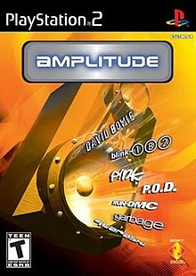
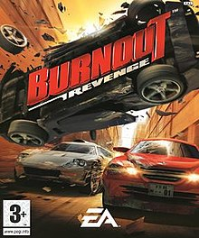

Hello Home Skillet!
____ __________ .___ _________ _____ .____
| | \ \ | |__ __ ___________/ _____/ / _ \ | |
| | / | \| \ \/ // __ \_ __ \_____ \ / /_\ \| |
| | / | \ |\ /\ ___/| | \/ \/ | \ |___
|______/\____|__ /___| \_/ \___ >__| /_______ /\____|__ /_______ \
\/ \/ \/ \/ \/
Welcome to... THE COLLECTION.
This is a (soon to be) extensive archive of every single Playstation 2 game that I played or saw gameplay for when I was a wee lad.
One day, when I have my own house and my own mancave and no one to tell me that I should get a job or a girlfriend, I hope to own
every single on of these games and have them on display. In doing this, I will be effectively creating a record of my life in the form
of various virtual escapades. I'm cool... I swear.
Enjoy!

I dont remember this one too well, but I saw it on a Demo Disk once and I think my dad had seen the movie.
You play as some goon in a purple and yellow suit and he an transform into this large boy with a big gun or a smol boy with a tiny gun.

Basically my introduction to how cool video game music could be. "Baseline" by Quarashi has my heart forever.
You use a big butterfly net to catch monkeys with police sirens on their heads.
This game was absolutely terrifying. Or as terrifying as gunning down alien insurgents can be.
I piloted a awkwardly controlled mech for about thirty minutes and decided that there were better ways for me to spend my time.

As someone who snuck underneath their parents bed to watch the first episode of Ben 10 when it aired, I can say that I was deliciously satisfied.
You take pictures of monsters and animals. Some of them you kill. Not the pig though. He's mad cool.

This is the game is like if Fast and Furious was less about a plot and winning a race and more about lighting your tires on fire.
/\ /\ /\
/ \ / \ / \
___/| / 00 \-/ 00 \-/ 00 \ |\___
___/ / [====================] \_ \__
__/ / \_ \_
__/ / &^rrrrrrrrrrr)) \ \__
_/ / rrrrrrrrrrrrrr rrrrrrrr)) | \__
/ |_ rrrrrrrr \Rrr rrrrrrrrr)) / \_
| \_____rrrrrrr rrrrrrrr)) | \_
/ rrrrrr rrrrrr)) __/ \
| rrrrr rrrrr))\____/ \
| rrrr rrrr)) |
| rrrr QQQQ) QQQQQQQQ> rrr)) \
| rrr (QQQQQQQQ) (QQQQQQQQQQQQQQQ) rrr) |
| rr____ (QQQQQQQQQ) (QQQQQQQQQQQQQQQQQQQ) _____rrr) |
| rr \____ (QQQQQQ> QQQQQQQQQQQQQ) _______/ rr) |
\ r { \____ _________/ r)) |
| r / \_______________________/ | r)) |
| r { } |\ / | r)) |
\ r | | / \ | \ r)) /
| rr { } | \_ \ | rr) _|
\ rr | | | \_ | \ rrr) _/
\_ rrr { / / \__ \ | rrr) __/
\_ rrr \ | | \__ | | rrrr) ___/
\__ rrrrr\_____/ / \__ \ \ rrrrrr) _____/
\___ (rrrrrrrr/ \___ | rrrrrrrr) ____/
\_____(rrrrrr| \| rrrrrrrrr)_______/
(rrrrrrrrrr rrrrrrrrrrr)
(rrrrrrrrrrr rrrrrrrrrrr))
(rrrrrrrrrrrrrrrr))